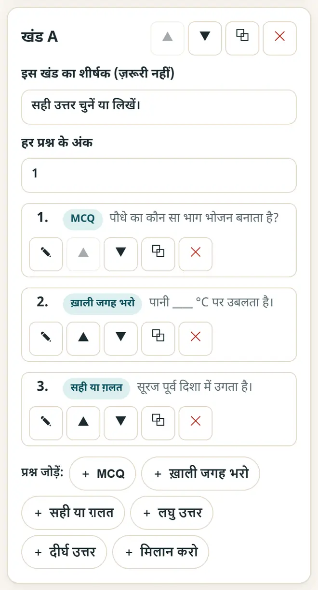
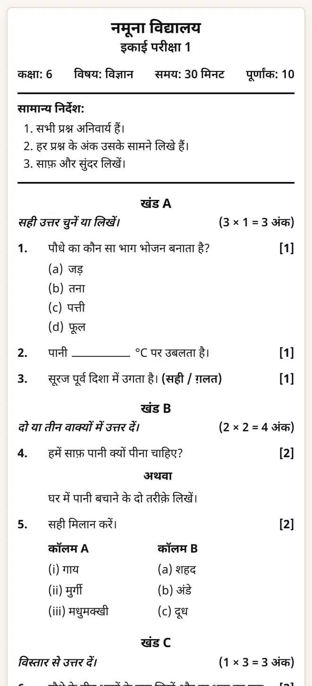

शिक्षकों के लिए प्रश्न पत्र का फ़ॉर्मेट: ऑनलाइन प्रश्न पत्र मुफ़्त में बनाएँ
वर्ड प्रोसेसर में टेस्ट पेपर टाइप करने में समय लगता है: नंबर डालना, किनारे पर अंक लिखना, विकल्प सीधी लाइन में लगाना। यह मुफ़्त ऐप फ़ॉर्मेट ख़ुद सँभालता है। आप किसी भी भाषा में प्रश्न लिखें; यह उन्हें नंबर देता है, अंक जोड़ता है और उत्तर कुंजी बना देता है।
छोटा जवाब
प्रश्न पत्र मेकर खोलें और “ख़ाली प्रश्न पत्र शुरू करें” दबाएँ। स्कूल, परीक्षा, कक्षा, विषय, समय और पूर्णांक भरें। खंड जोड़ें, हर खंड में “हर प्रश्न के अंक” भरें और प्रश्न जोड़ें। जब “कुल अंक” पूर्णांक के बराबर हो जाए, तो “छापें या PDF सेव करें” दबाएँ।
5 स्टेप में प्रश्न पत्र
-
पेपर का शीर्षक भरें
प्रश्न पत्र मेकर खोलें। यह एक नमूना पेपर के साथ खुलता है, ताकि आप फ़ॉर्मेट देख सकें। उसे हटाने के लिए “ख़ाली प्रश्न पत्र शुरू करें” दबाएँ। स्कूल का नाम, परीक्षा का नाम, कक्षा, विषय, समय, पूर्णांक और तारीख़ लिखें। विद्यार्थी के नाम और रोल नंबर की लाइनें भी जोड़ सकते हैं।
-
सामान्य निर्देश लिखें
हर लाइन में एक निर्देश लिखें, जैसे “सभी प्रश्न अनिवार्य हैं”। अगर पेपर पर निर्देश नहीं चाहिए, तो उस बॉक्स का निशान हटा दें।
-
खंड जोड़ें और अंक तय करें
पेपर के हर भाग के लिए “खंड जोड़ें” दबाएँ। चाहें तो खंड का शीर्षक लिखें और “हर प्रश्न के अंक” भरें: उस खंड के हर प्रश्न के उतने ही अंक होंगे।
-
प्रश्न जोड़ें
हर खंड में इन बटनों से प्रश्न जोड़ें: “MCQ”, “ख़ाली जगह भरो”, “सही या ग़लत”, “लघु उत्तर”, “दीर्घ उत्तर” और “मिलान करो”। सही विकल्प पर निशान लगाएँ या उत्तर कुंजी के लिए उत्तर लिखें। आप “अथवा” वाला प्रश्न जोड़ सकते हैं, प्रश्न को ऊपर-नीचे कर सकते हैं या उसकी कॉपी बना सकते हैं।

खंड और प्रश्न जोड़ें। अंक अपने-आप जुड़ते हैं। -
कुल अंक जाँचें और प्रिंट करें
ऐप प्रश्नों को नंबर देता है और अंक जोड़ता है। “कुल अंक” बताता है कि पेपर पूर्णांक से मेल खाता है या नहीं। “छापें या PDF सेव करें” दबाएँ और A4 काग़ज़ या Save as PDF चुनें। उत्तरों की अपनी कॉपी के लिए “उत्तर कुंजी” खोलें और “उत्तर कुंजी छापें” दबाएँ।

प्रश्न पत्र, A4 पर प्रिंट के लिए तैयार।
अच्छे प्रश्न पत्र के लिए सुझाव
- आसान से कठिन की ओर चलें: पहले वस्तुनिष्ठ प्रश्न (MCQ, ख़ाली जगह, सही या ग़लत), फिर लघु उत्तर, फिर दीर्घ उत्तर।
- मिलान वाले प्रश्न में हर सही जोड़ी एक लाइन में लिखें। पेपर दूसरा कॉलम अपने-आप मिला देता है, और उत्तर कुंजी में सही जोड़ियाँ रहती हैं।
- प्रश्न किसी भी भाषा में लिख सकते हैं। “प्रश्न पत्र पर छपे शब्दों की भाषा” से समय, पूर्णांक और खंड जैसे शब्द आपके पेपर की भाषा में छपते हैं।
- पेपर को फ़ाइल के रूप में रखने के लिए “प्रश्न पत्र फ़ाइल में सेव करें” दबाएँ। अगली बार “सेव किया प्रश्न पत्र खोलें” दबाएँ, कुछ प्रश्न बदलें और फिर प्रिंट करें। यह फ़ाइल किसी दूसरे शिक्षक को भी भेज सकते हैं।
नए मुफ़्त टूल और हिंदी में AI के पाठ पाएँ
हमारी ईमेल लिस्ट से जुड़ें: नए मुफ़्त ऐप, नई गाइड और AI पर हिंदी वीडियो पाठ की जानकारी आपको मिलती रहेगी। कोई स्पैम नहीं।
सिर्फ़ वयस्कों (18+) के लिए। आप कभी भी नाम हटवा सकते हैं।
हम ये टूल क्यों सुझाते हैं
- सबके लिए मुफ़्त: न विज्ञापन, न साइन-अप, न कोई पेड प्लान।
- प्राइवेट: आपकी फ़ाइलें और जानकारी आपके अपने डिवाइस पर ही रहती हैं।
- फ़ोन, लैपटॉप या स्मार्टबोर्ड पर चलते हैं, और एक बार खुलने के बाद बिना इंटरनेट भी।
- हिंदी समेत 12 भाषाओं में।
वीडियो से सीखना पसंद है? हमारे YouTube चैनल पर AI और मुफ़्त टूल्स के हिंदी पाठ देखें।
अक्सर पूछे जाने वाले सवाल
प्रश्न पत्र का फ़ॉर्मेट क्या होता है?
सबसे ऊपर स्कूल का नाम, परीक्षा का नाम, कक्षा, विषय, समय और पूर्णांक। फिर सामान्य निर्देश, और उसके बाद खंडों में प्रश्न, जिनके साथ अंक लिखे होते हैं। आपके स्कूल या बोर्ड का अपना पैटर्न हो सकता है, इसलिए खंडों की संख्या और अंक उसी के हिसाब से रखें।
क्या हिंदी या किसी और भाषा में प्रश्न पत्र बना सकते हैं?
हाँ। जिस भी भाषा में आपका फ़ोन या कंप्यूटर टाइप कर सकता है, उसमें प्रश्न लिखें। “प्रश्न पत्र पर छपे शब्दों की भाषा” में वही भाषा चुनें, ताकि पेपर के लेबल भी उसी भाषा में हों।
क्या यह उत्तर कुंजी भी बनाता है?
हाँ। आप जो सही विकल्प चुनते हैं और जो उत्तर लिखते हैं, उनसे उत्तर कुंजी बनती है। उसे देखने के लिए “उत्तर कुंजी” खोलें और अलग से छापने के लिए “उत्तर कुंजी छापें” दबाएँ।
क्या प्रश्न पत्र को PDF या Word फ़ाइल में सेव कर सकते हैं?
PDF: हाँ। “छापें या PDF सेव करें” दबाएँ और Save as PDF चुनें। ऐप Word फ़ाइल नहीं बनाता। “प्रश्न पत्र फ़ाइल में सेव करें” से एक फ़ाइल सेव होती है, जो इसी ऐप में दोबारा खुलती है, ताकि आप पेपर बाद में बदल सकें।
क्या यह मुफ़्त है? क्या मेरे प्रश्न डिवाइस से बाहर जाते हैं?
यह मुफ़्त है, बिना साइन-अप और बिना वॉटरमार्क। पेपर आपके ब्राउज़र में बनता है और कुछ भी अपलोड नहीं होता, इसलिए प्रश्न आपके पास ही रहते हैं।
काम की लगी?
इसे किसी दोस्त, साथियों या अपने स्कूल के WhatsApp ग्रुप में भेजें।